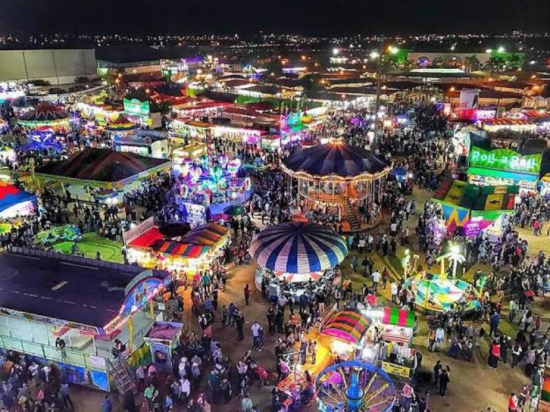
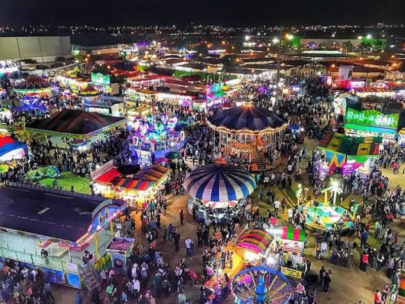
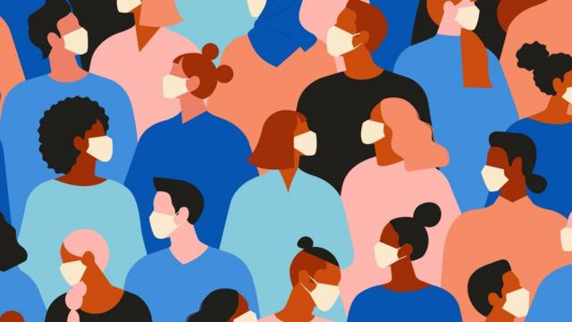
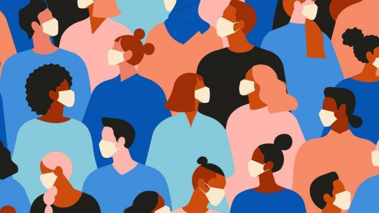
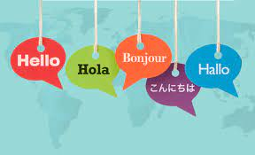
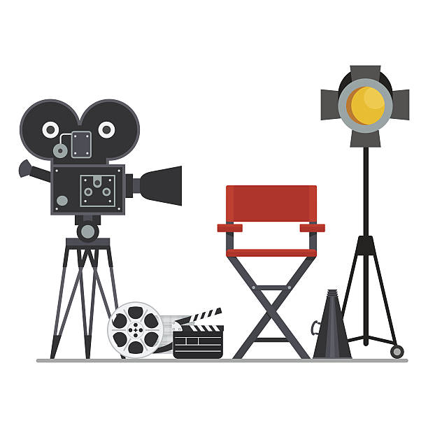
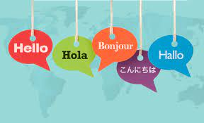
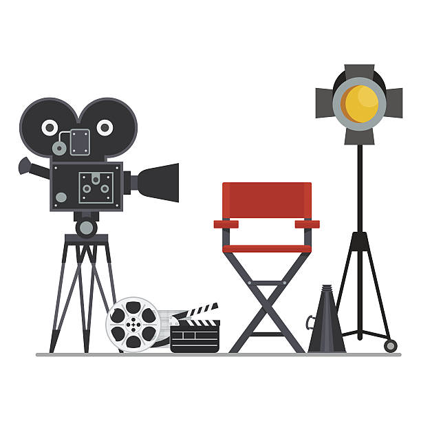
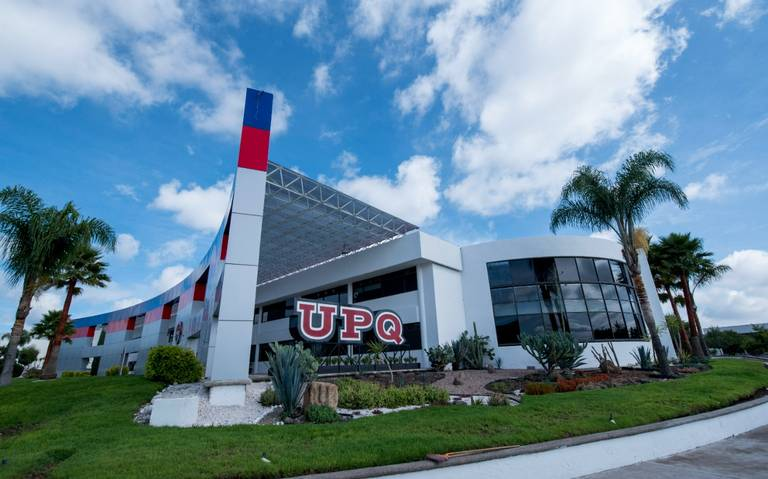

Mi Autobiografia
Nacimiento y Familia
Mi nombre es Camila Michelle Sánchez Breña, nací en Querétaro el 11 de Enero del 2006 y actualmente tengo 18 años. Tengo una hermana mayor llamada María Fernanda Sánchez Breña, algo curioso de nosotras es que las dos nacimos en diferentes lugares, ya que, ella nació en México y yo en Querétaro, esto debido a que toda la familia de mi papá es de México y toda la familia de mi mamá es de Querétaro. Actualmente vivo con mis abuelos Reyes Breña Calderón y Antonia Basaldúa Peréz, ambos son mis abuelos maternos y desde que era niña he vivido con ellos y con mis Padres María Guadalupe Breña Basaldúa y Edgar Sánchez Álvarez. A mi familia de México la he visitado varias veces cuando era niña, pero actualmente debido a mis tiempos y los de mi familia no la he podido ver pero ellos nos visitan en la mayoría de los cumpleaños.
Estudios
- <Kinder> Cuando tenia 3 años entre a el kinder, en mi kinder pude aprender muchas cosas y tambien pude visitar teatros, parques, etc, ya que, en esa escuela llevaban a los niños de excursion. En mi kinder aprendi diferentes actividades como parcticar teatro o aprender a cantar, esto fue una de las cosas que mas me gustaba, ya que, realmnete era entretenido.
- <Primaria>Cuando tenía 6 años entre a la primaria, aquí podría decir que hice varias cosas interesantes debido a que ahí también realizaban muchas excursiones, por ejemplo, uno de los lugares que me llevaron a ver
fue a las oficinas de gobierno, ahí nos explicaron todo acerca de cómo se manejaban las juntas con los políticos, como trabaja cada departamento al igual que sus funciones y de igual manera me mostraron como es todo el lugar y que hace
cada una de esas oficinas y personas que trabajan ahí, nos dieron conferencias en las diferentes auditorios de estas oficinas y nos ponían hacer actividades como dar discursos acerca de política, etc. Otro de los lugares que visitamos
fue un planetario, en este lugar nos enseñaron todo acerca de lo relacionado con los planetas, como funciona cada parte del sistema y como es cada uno de los planetas, la verdad fue una experiencia interesante y entretenida, así como estos lugares
también llegue a visitar palacio de gobierno y museos donde explicaban todo acerca de cómo era México antes, nos contaron acerca de las historias y leyendas de terror que había en esos museos y de igual manera nos enseñaron acerca de cosas
importantes como datos acerca de la revolución mexicana, etc. finalmente fuimos a lugares como la feria de Querétaro y ese lugar lo visitamos solo para conocer más acerca de los animales y acerca de la marina. Así como las excursiones que tuve ahí
también aprendí muchas cosas interesantes, en esta escuela también aprendí a jugar basquetbol, etc.
 

- <Secundaria> Cuando tenía 12 años entre a la secundaria en el Instituto Cambridge, aquí pude aprender cosas nuevas y experimentar nuevas actividades, por ejemplo, en esta escuela aprendí taekwondo y a bailar danza folklorito y cuando aprendí a bailar ese tipo de bailes lo fui practicando y de ahí estuve en competencias, en las competencias me fui a diferentes lugares y teatros, en ambas actividades aprendí muchas cosas y fue algo entretenido e interesante por las cosas que se hacían ahí. Realmente en la secundaria de manera presencial estuve 1 año y medio y en lo demás estuve estudiando en línea, ya que, en ese momento ya había comenzado la pandemia. Durante las clases en línea al igual aprendí muchas cosas interesantes, fue una experiencia buena, ya que, también en esos momentos aprendí a usar más cosas como aplicaciones o páginas. Finalmente, cuando acabé la secundaria tuve mi graduación en línea, realmente, aunque la escuela estaba en línea, realmente aprendí muchas cosas, ya que, al ser línea era más dinámico todo, por eso siento que fue algo interesante.
- <Preparatoria> Cuando tenía 15 años entre a la preparatoria en el Instituto Cambridge, escuela en la que actualmente estoy, escogí la carrera de programación porque siempre me ha interesado mucho todo lo relacionado con la tecnología y como es que funciona, es por eso que escogí esta carrera, durante el primer y segundo semestre estuvimos trabajando en linea, pero en general la escuela en linea eran tomadas de la misma forma que presencial pero en linea. Cuando entramos de manera presencial fue algo muy bueno, ya que, es una experiencia mejor que cuando estamos en linea, a lo largo de lo que llevo de la preparatoria he aprendido muchas cosas interesantes sobre la programación y sobre la tecnología en general, esto me ha ayudado a poder conocer más sobre el funcionamiento de las cosas, etc. De igual manera ahorita en este punto donde ya casi acabo la carrera, he aprendido y vivido experiencias muy interesantes, como las del servicio social, que sigue siendo algo interesante, ya que, ahí puedo ver como es que todo lo que he estudiado tiene un interesante uso, pues realmente es intersante poner en practica todo lo que se ve en la carrera, ademas de que es ineresante es entretenido poder entender como que programación funciona en estas areas. Actualmente estoy en el ultimo semestre de preparatoria y realmente estoy aprendiendo mucho y cada vez mas me interesa la tecnologia y programación.
 

 



Hobbies
| Actuación | Canto | Pintura | Idiomas | Escribir | Crear | VideoJuegos |
|---|---|---|---|---|---|---|
| Este hobbie lo tuve desde que era niña, ya que, siempre me ha gustado la actuacion en el cine y cuando entre a la preparatoria pude desarrollar más este hobbie, ya que, vi una materia que se enfocaba en actuar y de ahí este es una de los hobbies el cual quiero desarrollar profesionalmente. | Cuando era niña, este fue uno de los hobbie que más fuí desarrando, debido a que, siempre me ha gustado cantar y por eso desde niña lo he practicado y desarrollado. | Durante mi infancia pude desarrollar varias actividades y una de esas fue aprender a pintar, aunque realmente no pintaba con frecuencia, pude desarrollar una habilidad para hacer pinturas, es un hobbie que tengo pero que actualmente no hago con frecuencia. | Cuando estuve en pandemia me di cuenta que podia aprender un idioma nuevo practicando con aplicaciones, esto debido a que en pandemia me intereso mucho aprender Frances y Noruego y cuando practicaba o leia alguna cosa en ese idioma podia ententerlo, no con una gran claridad, pero si podia hacerlo. | Este hobbie lo desarrolle cuando tuve un momento emocionalmente complejo, ya que, cuando estaba triste o no me sentia bien, escribia canciones para poder sentirme mejor y en ese momento pude desarrollar mas de 8 canciones, por eso es que tengo ese hobbie de crear o hacer canciones, ya que, para mi es una forma para desestreasarse y sentirse mejor. | El hobbie de crear es tambien un hobbie que desarrolle, ya que, este se refiere a el hobbie de crear música y es que este al igual que el hobbie de escribir va de la mano, ya que, durante esos momentos para sentirme mejor escribia canciones y la producia, este hobbie no lo realizo con frecuencia, pero si lo hago cuando quiero relajarme. | Los videojuegos son uno de los hobbies que desde niña he desarrollado, esto debido a que siempre he jugado videojuegos y conzco mucho acerca de estos, ya que, la mayor parte de mi infancia jugue videojuegos. |
Actualmente estoy casi acabando mi preparatoria y mi servicio social el cual realizo en el Goméz Morin, y el cual consiste en hacer un servidor local para las librerias
 Información
Información
Estoy haciendo mis papeles para poder entrar a la universidad que quiero que es la UPQ en Mecatronica
 InformaciónEstoy viendo carreras para estudiar después artes dramáticas y viendo que otras actividaes puede hacer, como canto, aprender otro idioma o viajar a otro país para estudiar o trabajar.